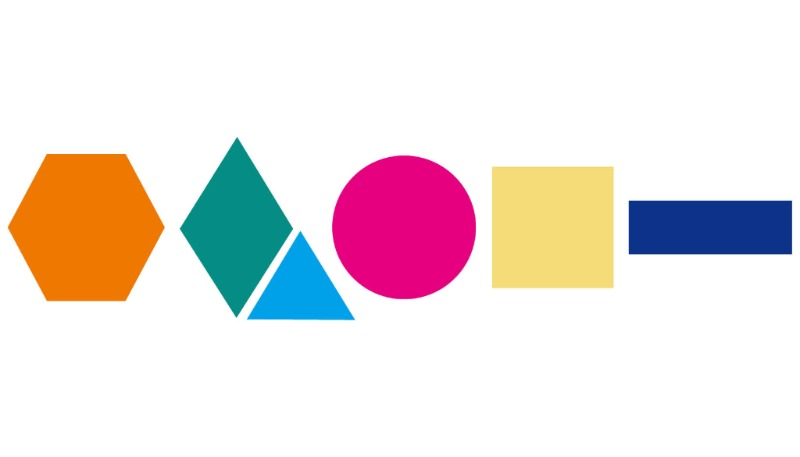

HW 2 Exam <<
Previous Next >> HW 3
w16_exam1
題目: 請以自己的學號最後四碼作為繪圖的座標原點, (例如: 若學號最後四碼為 3932, 請將 (39, 32) 作為繪圖座標原點), 並以 pixel=2 的黑色直線分別利用 Brython 繪圖, 標示出向右為正的 X 軸, 以及向下為正的 Y 軸, 並且利用文字標示出原點座標 (例如: (39, 32)), 之後請自選最左側圖形的起始點座標, 直接在頁面畫出下列圖像, 繪圖程式除了必須直接列在頁面 html 檔案外, 也請存入自己的 Gist 區域, 並在所完成的圖像下方, 以自選標題的 anchor 連結至 Gist, 讓使用者點擊該連結後, 可以在各自的 Brython 頁面中繪出下列圖像 - answer_1 -

from browser import document, html
import math
# 初始化 HTML 畫布
def setup_canvas():
if not document.querySelector("#my_canvas"):
document <= html.CANVAS(id="my_canvas", width=1200, height=900)
setup_canvas()
canvas = document["my_canvas"]
ctx = canvas.getContext("2d")
# 原點座標
origin_x, origin_y = 32, 22
# 繪製 X 和 Y 軸
ctx.beginPath()
ctx.moveTo(origin_x, origin_y)
ctx.lineTo(750, origin_y)
ctx.moveTo(origin_x, origin_y)
ctx.lineTo(origin_x, 450)
ctx.strokeStyle = "black"
ctx.lineWidth = 2
ctx.stroke()
# 標記原點
ctx.font = "18px Arial"
ctx.fillStyle = "black"
ctx.fillText("(32, 22)", origin_x + 7, origin_y - 7)
# 繪製圖形
def draw_hexagon(x, y, size, color):
ctx.beginPath()
for i in range(6):
angle = i * (2 * math.pi / 6)
ctx.lineTo(x + size * math.cos(angle), y + size * math.sin(angle))
ctx.closePath()
ctx.fillStyle = color
ctx.fill()
def draw_diamond(x, y, width, height, color):
ctx.beginPath()
ctx.moveTo(x, y - height // 2)
ctx.lineTo(x + width // 2, y)
ctx.lineTo(x, y + height // 2)
ctx.lineTo(x - width // 2, y)
ctx.closePath()
ctx.fillStyle = color
ctx.fill()
def draw_triangle(x1, y1, x2, y2, x3, y3, color):
ctx.beginPath()
ctx.moveTo(x1, y1)
ctx.lineTo(x2, y2)
ctx.lineTo(x3, y3)
ctx.closePath()
ctx.fillStyle = color
ctx.fill()
def draw_circle(x, y, radius, color):
ctx.beginPath()
ctx.arc(x, y, radius, 0, 2 * math.pi)
ctx.fillStyle = color
ctx.fill()
def draw_rectangle(x, y, width, height, color):
ctx.beginPath()
ctx.rect(x, y, width, height)
ctx.fillStyle = color
ctx.fill()
# 調用圖形繪製函數
draw_hexagon(150, 150, 45, "orange")
draw_diamond(240, 150, 60, 90, "teal")
draw_triangle(247, 195, 307, 195, 277, 150, "Aqua")
draw_circle(345, 150, 45, "red")
draw_rectangle(398, 113, 75, 75, "gold")
draw_rectangle(480, 135, 90, 30, "Indigo")
HW 2 Exam <<
Previous Next >> HW 3